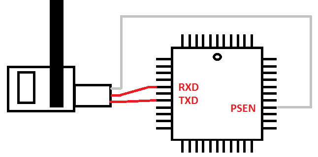
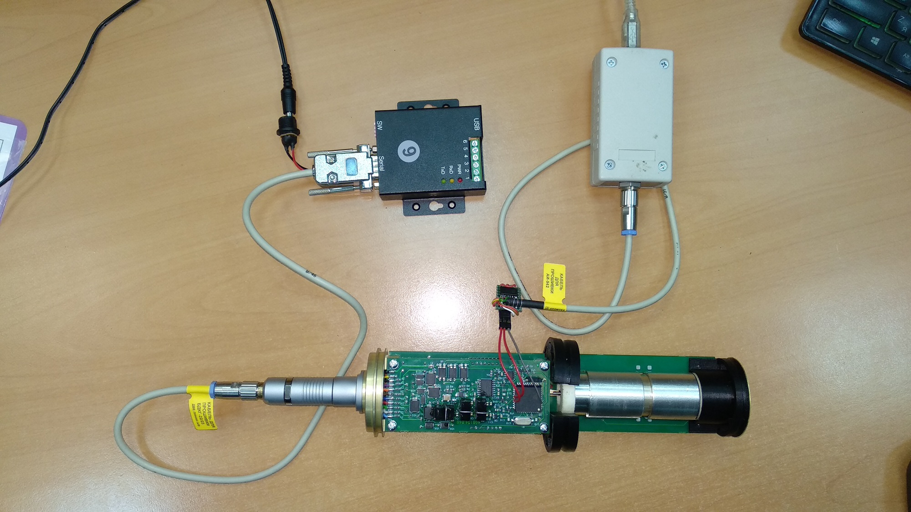
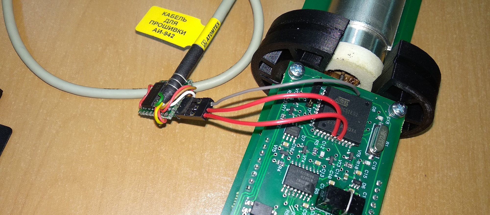

Если Flip не видит БД
Бывает, БД не подключается к Flip'у без видимых причин через прошивочный кабель (не возможно перепрошить),
при этом нормально подключается стандартным кабелем к BDKG Utility <...>
- Подключиться (запаять провода) к контроллеру с помощью кабеля для прошивки 942-го адаптера



- Вставить перемычку (на прошивку контроллера)
- Подключить кабель прошивки 942-го адаптера через адаптер USB к компьютеру
- Подать питание на БД (удобно через прошивочный кабель — потом не надо будет подключать)
- Запустить Flip — он должен будет подключиться
Если все равно не подключится, можно попробовать кинуть провод от 101-го входа на 32 вывод контроллера
- (Стереть прошивку?)
- В Flip'е поставить "Level 0" и ПОСТАВИТЬ-СНЯТЬ-ПОСТАВИТЬ BLJB
- Выключить Flip
- Отключить адаптер USB
- Подключить USB-COM адаптер с подключенным прошивочным кабелем
- (Включить-выключить питание)
- Запустить Flip, теперь он должен подключиться
- Прошивать стандартным способом